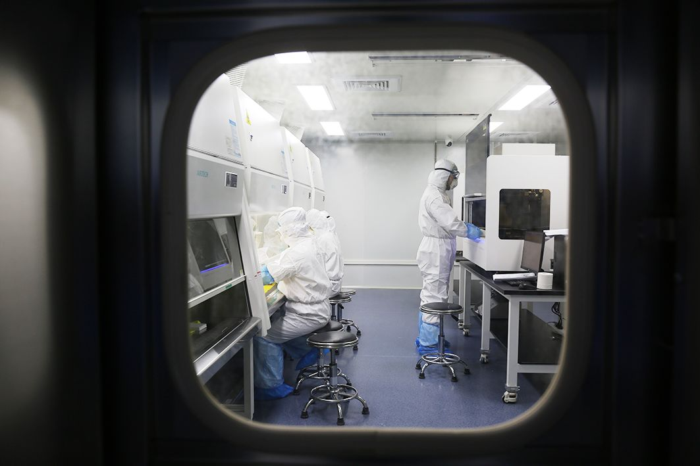
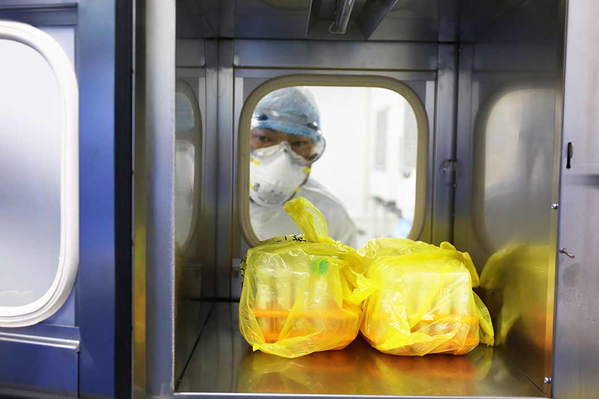
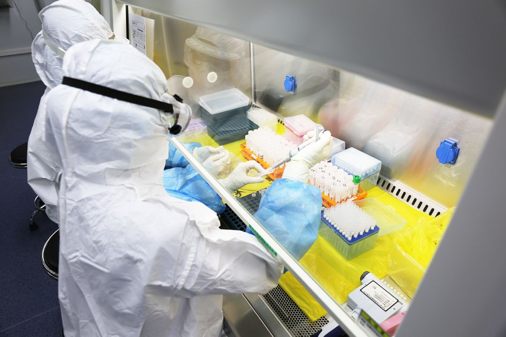
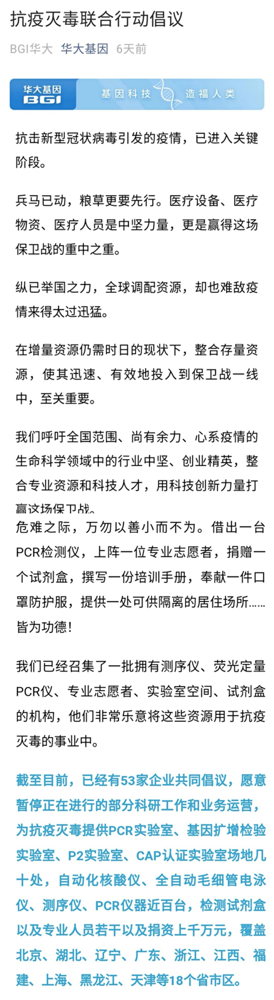
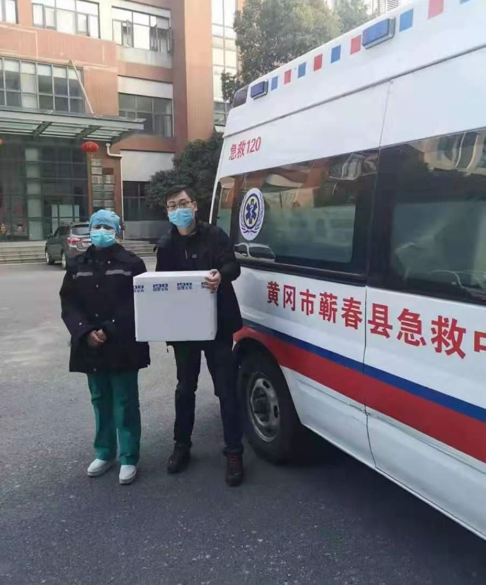

防护服中湿透6小时，这个除夕他们还在实验室里寻找诊断新型肺炎的“铁证”
原文链接 备份链接 实验室检测员，将在病毒检测实验室里度过24小时。这里的不眠之夜，与2000多万上海市民息息相关。 文 | 黄 祺 2名流行病学专业人员，一辆专车，一个按照高致病性病原微生物A类包装标准密封包装的特殊盒子，盒子里，是一名 …

“火眼”实验室投入运行，将为武汉及周边城市提供充足的检测能力，也将作为“雷神山”、“火神山”、“方舱”等众多抗疫堡垒的前哨，并将为一线员工和疫区人群重返工作岗位提供坚实的科学依据。
文 | 黄 祺
武汉疑似患者未得到诊断的问题，近一两天有望得到缓解。这背后，刚刚交付使用的“火眼”实验室将在核酸样本检测环节，发挥很大的作用。

程征宇 | ***摄***
_
_
_
2月5日下午，设计检测通量为每日万人份级的新型冠状病毒应急检测实验室——“火眼”实验室正式启动试运行。
“火眼”实验室由武汉市政府、东湖高新区、中交二航局、上海诺瑞实验室、华大基因联合共建。其中，东湖高新区提供场地，华大基因主导设计及运营，中交二航局主导施工，上海诺瑞提供大量实验室装备。实验室占地面积约为2000平方米。

程征宇 | 摄****
1月30日，华大基因完成实验室设计，中交二航局于1月31日正式启动实验室施工，在中交二航局和上海诺瑞的279名员工自愿加班、全力奋战下，仅用5天时间，完成实验室主体施工。
“火眼”实验室核心实验区总面积达1000平方米，严格按照P2（生物安全二级）实验室设计，装备华大智造高通量测序整体解决方案和设备；配置30台B2级生物安全柜；批量自动化核酸提取平台配置12台自动化提取设备；同时，配备有配套实验室隔间、样本间、试剂保存间、办公区等，设计检测通量为每日万人份级。
“火眼”实验室投入运行，将为武汉及周边城市提供充足的检测能力，为发热病人的确诊、高危人群的排查、疑似病例的甄别、隔离阳性感染者、保护阴性健康人群提供精准的判断，也将作为“雷神山”、“火神山”、“方舱”等众多抗疫堡垒的前哨，并将为一线员工和疫区人群重返工作岗位提供坚实的科学依据。
2月6日晚上公布的最新数据，2月5日湖北省共检测样本12277例，其中，武汉市检测样本6500例。“截至目前，武汉市已有35家机构能开展核酸检测项目，能确保昨天新增的疑似病例今天全部采样检测。”
发布会透露，湖北目前共有97家检测机构开展核酸检测检验，中国疾控中心和17个省份的83位实验室检测人员增援湖北，饱和状态下，日检测能力最高可以达到万人份。2月5日，全省共检测样本12277例，其中，武汉市检测样本6500例。
但从另一个数据中我们仍然可以看到接下来湖北省新冠肺炎医疗诊断和救治的压力：截至2月5日24时，湖北省累计追踪密切接触者90997人，尚在接受医学观察64127人。以上庞大的人群中，很多人都将有检测需求。

程征宇 | ***摄***
昨天（2月6日）晚上，华大基因接受了《新民周刊》采访，介绍了备受瞩目的“火眼”实验室目前的运转情况。
_
_
_
《新民周刊》：火眼实验室2月5日交付使用，现在已经开始接收检测样本了吗？正式运转是什么时候开始？什么时候可以达到每天万人份的检测量？
_
_
_
华大基因：”火眼”实验室将在武汉市新型肺炎防控指挥部的部署下高效运转，经过2月5日的连夜试运行，2月6日下午，“火眼”实验室的理论通量已达4000人份/日。
目前，我们正在进行包括核糖核酸自动化提取设备的调试，以及整个检测流程的优化。相关试运行程序完备后，我们会根据武汉市新型肺炎防控指挥部的统一部署和实际需求，逐步提升检测通量。
_
_
_
《新民周刊》：除了量，我们还特别期待速度。按照最佳的运行状态，一个人的样本检测，最快多少时间能够做完？
_
_
_
华大基因：单个样本通过人工操作进行核糖核酸提取及PCR检测，实验流程约为3小时。但在集中处理大规模样本的检测时，整体完成时间会受到样本信息流、规模化生产排期等多方面的影响。
目前，华大基因在接收到疾控中心及医院的检测样本后，保证在24小时内出具检测结果。
“火眼”实验室配备了华大智造自动化样本制备系统（MGISP-960），可成规模实现样本自动化提取，大大加快限速限通量的核酸提取环节，将整体提升大规模样本的检测速度。

程征宇 | ***摄***
_
_
_
《新民周刊》：大家工作强度是怎样的？人手是不是紧张？
_
_
_
华大基因：实验室需要配备至少150人的团队，以24小时3班轮替的工作方式，才能保障“火眼”实验室每日1万人份的满负荷运转状态。
_
_
_
《新民周刊》：实验室有12台自动检测设备，这些设备可以明显帮助检测提速吗？
_
_
_
华大基因：当前新型冠状病毒检测中，疑似样本的病毒核酸提取，多是采用人工操作，人工操作是制约样本检测提速的最大“瓶颈”，也加大了一线医务人员病毒感染的潜在风险。
通过加载自动化样本制备系统，可以大幅提升疑似样本的病毒核酸提取效率，极大加快新冠病毒的检测及鉴定速度，解决病毒检测速度慢、确诊难的问题，为疫情防控提供了强有力的工具保障。
目前，火眼实验室装备的华大智造自动化样本制备系统MGISP-960，已经获得湖北省药品监督管理局注册证书，可实现一站式核酸提取，自动化程度高，上机后完全无人工干预，自动化提取环节仅耗时一小时，可加速大规模人群筛查中的病例检测。
这个设备每小时可提取36-96个样本，一人同时操作三台，大大提升人工效率，满足目前高通量筛查的紧急需求。
_
_
_
《新民周刊》：“火眼”实验室的建设只用了5天时间，和常规的实验室相比，有没有做一些简化？
_
_
_
华大基因：按照一般的速度，如此规格的实验室，在物料完备的情况下，至少要3个月的建设时间，我们特别感谢施工方中交二航局和设备支援方上海诺瑞，以及其他合建单位对“火眼”实验室高效建设所付出的巨大努力，他们与华大基因人员连日高强度奋战，让“火眼”实验室在5天时间里严格按照P2（生物安全二级）实验室设计，并达到了试运行要求。

_
_
_
《新民周刊》：几天前华大发起“共建万人级病毒检测中心”的倡议，现在“火眼”实验室里有哪些是响应倡议获得的资源？
_
_
_
华大基因：在发出“共建万人级病毒检测中心”的倡议后，“火眼”实验室的建设收到了西安天隆科技有限公司和天根生化科技（北京）有限公司等单位的仪器捐助共4台，以及河南省青少年发展基金会200万元捐款（用于临床检测及相关研发）和IDG资本100万元捐款（用于“火眼”实验室建设）。

华大基因湖北团队将试剂盒送到黄冈
_
_
_
《新民周刊》：近几天湖北其他地区的疫情正在加重，他们的检测缺口非常大。华大接下来对这些地区有哪些行动计划？
_
_
_
华大基因：目前华大基因试剂盒已在部分疾控部门和医院开始使用并且储备，疾控和临床评价积极。随着疫情防控进入关键时期，我们全力服务疫情防控需要。希望尽快让武汉、湖北及全国的疑似病例都能第一时间使用试剂盒，让每一位疑似病例能尽快确诊。
华大武汉、深圳、天津三地病原交付团队均随时待命，保证检测结果及时交付，为疫情防控提供最快的信息反馈。
征集令
“战疫”成败，匹夫有责。
《新民周刊》现面向全国征集新冠肺炎采访对象和真实故事：
如果你是参与抗击新冠肺炎疫情的医护人员或其家属，我们希望聆听你的“战役”故事，也希望传达你的诉求。
如果你是确诊、疑似患者本人或家属，我们希望了解你和家人如何“抗疫”的过程，让外界了解你的真实经历。
如果你是疫情严重地区的普通市民，我们希望展现你的乐观，并倾听你所需的帮助。
如果你是公共服务人员或各类捐助者，我们希望看到你的“最美逆行”，记录下你的无私。
……
抗击新冠肺炎疫情，我们诚征对疫情了解的社会各界人士，提供相关线索，说出你的故事，让我们用新闻留存这一切。
《新民周刊》新冠肺炎线索征集值班编辑联系方式（添加时请简要自我介绍）：
周一：应 琛 微信号：paulineying0127
周二：金 姬 微信号：gepetta
周三：黄 祺 微信号：wxid_bf5mudid7oz322
周四：周 洁 微信号：asyouasyou
周五：孔冰欣 微信号：kbx875055141
周六：吴 雪 微信号：shyshine1105
周日：姜浩峰 微信号：jianggeladandong
新闻是历史的底稿，你们是历史的见证者。期待你的故事、你的线索！

▼
大家还都在看这些
▼
转载请在评论区留言，获得授权！
转载时，须注明作者、出处和微信号


原文链接 备份链接 实验室检测员，将在病毒检测实验室里度过24小时。这里的不眠之夜，与2000多万上海市民息息相关。 文 | 黄 祺 2名流行病学专业人员，一辆专车，一个按照高致病性病原微生物A类包装标准密封包装的特殊盒子，盒子里，是一名 …
原文链接 备份链接 来源：《潜望》 作者：卜祥 抗击新型冠状病毒疫情早期矛盾之一是检测试剂盒产能不足，无法快速区分真假患者，确诊病人。为解决这一矛盾，根据国家药品监督管理局网站消息，截至1月31日，国家药品监督管理局根据《医疗器械应急审批 …
原文链接 备份链接 李文亮生前发给中青报·中青网记者杨海的照片 中青报·中青网记者 杨海 2月7日凌晨2点58分，感染新冠肺炎的武汉市中心医院眼科大夫李文亮抢救无效去世。 2月2日，他在自己的头条号上更新自己的病情，他说前一天自己的新冠 …
原文链接 备份链接 【财新网】（记者 刘登辉 黄姝伦）新冠肺炎疫情肆虐，如何准确识别病人至关重要。目前使用的核酸检测确诊新型冠状病毒感染的肺炎，被披露出存在相当比例“假阴性”的检测结果。这意味着，每日攀升的确诊病例数之外，或有大量的新冠 …
原文链接 备份链接 06.02.2020本文字数：4302，阅读时长大约7.5分钟 导读：一周时间，武汉新增病例5.5倍增长，累计病例增长3.69倍。 作者 | 第一财经 马晓华 胥会云 武汉封城之后，湖北以外的各省份对新型肺炎展开了“ …